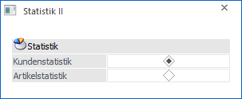
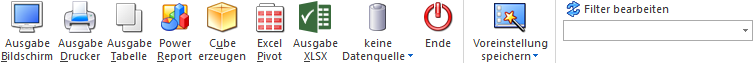

Im Menüpunkt…
1 WinLine FAKT
1 Auswertungen
1 Statistik
1 Verkaufsstatistik II
… gibt es die Möglichkeit, eine Statistik nach verschiedenen Selektionen und Sortierungen auszugeben.
Hinweis
Die Selektionen und Sortierungen können mit Hilfe des Buttons "Filter bearbeiten" realisiert werden.

Ø Statistik
An dieser Stelle kann entschieden werden, ob eine Kunden- / Lieferantenstatistik oder eine Artikelstatistik ausgegeben werden soll.
Buttons

Ø Ausgabe Bildschirm
Mit Hilfe des Buttons "Ausgabe Bildschirm" oder der Taste F5 wird die Auswertung am Bildschirm ausgegeben.
Ø Ausgabe Drucker
Durch Anwahl des Buttons "Ausgabe Drucker" wird die Auswertung am Drucker ausgegeben.
Ø Ausgabe Tabelle
Bei der Anwahl des Buttons "Ausgabe Tabelle" wird die Statistik in Form einer WinLine Tabelle dargestellt (nähere Informationen entnehmen Sie bitte dem Kapitel Verkaufsstatistik Tabelle).
Ø Cube erzeugen
Bei Anwahl des Buttons "Cube erzeugen" wird die Verkaufsstatistik im "Olap Viewer" angezeigt. In diesem können die Daten nach verschiedenen Gesichtspunkten (Dimensionen und Fakten) ausgewertet werden.
Hinweis
Ist im Artikelstamm die Option "Statistik" auf "2 - Summenzeilen" gestellt, so werden die Werte dieser Artikel auch bei Ausgabe als Cube nur in den Summen berücksichtigt.
Ø Excel Pivot
Durch Anwahl des Buttons "Excel Pivot" werden die selektierten Verkaufszeilen in Form einer Pivot Ausgabe in Microsoft Excel (2007 oder höher) angezeigt.
Ø Ausgabe XLSX
Mit Hilfe des Buttons "Ausgabe XLSX" werden die selektierten Verkaufszeilen an Microsoft Excel übergeben.
Ø Datenquelle
Mit Hilfe dieser Auswahl kann definiert werden, ob und wie eine Datenquelle (d.h. ein Snapshot oder eine MasterView) verwendet werden soll.
ü Keine Datenquelle
Bei Auswahl
von "keine Datenquelle" wird keine zuvor angelegte Datenquelle genutzt. D.h. die
Daten werden von der WinLine "live" ermittelt und in der gewünschten Form
ausgegeben.
Hinweis
Da die BI-Ausgabe (z.B. Cube oder Power Report) immer eine Datenquelle benötigt, wird im Hintergrund eine temporäre Datenquelle (Snapshot) gebildet.
ü Datenquelle
erstellen/aktualisieren
Die Daten werden zur Laufzeit ermittelt und an einen
zu definierenden Snapshot übergeben. Nach dem Füllen der Datenquelle wird die
gewünschte Ausgabevariante über die Datenquelle erzeugt. Dieser Vorgang kann mit
einer Zeitverzögerung verbunden sein, da die Daten zusätzlich gespeichert werden
müssen.
Hinweis
Die Ausgabevariante "Ausgabe Tabelle" steht beim Erstellen bzw. Aktualisieren einer Datenquelle nicht zur Verfügung.
ü Datenquelle verwenden
Bei der
Verwendung eines Snapshots werden die Daten direkt aus der Datenquelle gelesen,
d.h. die für die Ausgabe benötigten Daten können ohne Verzögerung in der
gewünschten Variante ausgegeben werden.
Wird hingegen eine MasterView
gewählt, so werden die Daten für die Ausgabe "live" ermittelt, wobei diese so
aktuell sind wie die zugrunde liegenden Datenquellen.
Hinweis
Der Button "Datenquelle verwenden" wird nur angeboten, wenn für diesen Bereich (bezogen auf den aktuellen Benutzer / Mandanten) zumindest eine private oder öffentliche Datenquelle existiert. Des Weiteren stehen die Ausgabevarianten "Ausgabe Bildschirm", "Ausgabe Drucker" und "Ausgabe Tabelle" nicht zur Verfügung.
Hinweis
Weitere Informationen zum Thema "Datenquellen" entnehmen Sie bitte dem Kapitel "Die Datenquelle".
Ø Ende
Durch Drücken des Buttons "Ende" bzw. der Taste ESC wird das Fenster geschlossen.
Ø Voreinstellung speichern
Durch Anwahl dieses Buttons erfolgt eine benutzerspezifische Speicherung aller im Fenster getätigten Einstellungen. Diese sogenannten "Voreinstellungen" können jederzeit wieder abgerufen werden und ermöglichen dadurch ein schnelleres und zielorientierteres Arbeiten (nähere Informationen entnehmen Sie bitte dem Kapitel "Die Voreinstellungen").
Ø Filter bearbeiten
Durch Anklicken des Buttons "Filter bearbeiten" kann die Statistik nach frei definierbaren Kriterien eingeschränkt werden.
Hinweis 1
Die Filter werden abhängig von der Selektion (Kunden- bzw. Artikelstatistik) gespeichert.
Hinweis 2
Es ist darauf zu achten, dass als Sortierkriterium nur Variablen der Statistiktabelle (im Filter unter der Bezeichnung "Statistik" ersichtlich) verwendet werden können.